Date
14 October 2026
Hardware
ESP32 Dev Module, DHT11 sensor, LED, push button
Software
Arduino IDE 2.3.10, DHT library, FreeRTOS (built into the ESP32 core)
01Aim and Overview
This project is a FreeRTOS temperature alert system on an ESP32. It reads a DHT11 sensor once a second, flashes an LED for 100 ms when the temperature reaches 29 °C, and lets a push button acknowledge the alert. Four tasks do the work, and they talk to each other only through FreeRTOS task notifications and one length-1 queue. No shared variable carries the alert.
Board: ESP32 Dev Module (ESP32-D0WD-V3), programmed from Arduino IDE 2.3.10 over COM9 at 115200 baud.
Sensor and I/O: DHT11 on GPIO 4, LED on GPIO 2, push button on GPIO 15.
Rule followed throughout: the Temperature Task never touches the LED. It only notifies the LED Task, which owns the LED.
Alert behaviour: one notification when the temperature first reaches the threshold, not one per sample, so the LED does not blink continuously.
02Hardware and Wiring
2.1 Hardware
The project uses a small set of parts, all on one breadboard and powered over USB.
| Component | Used for |
|---|---|
| ESP32 Dev Module (ESP32-D0WD-V3) | Runs the FreeRTOS program: dual core, 240 MHz, with a micro-USB port for power, upload and serial output |
| DHT11 temperature sensor module | Measures the room temperature that the Temperature Task reads once a second |
| LED | Alert indicator that flashes for 100 ms when the threshold is reached |
| Push button | Lets the user acknowledge the alert |
| Breadboard and jumper wires | Connects the parts without soldering |
| USB cable | Power, programming and serial monitor output at 115200 baud |
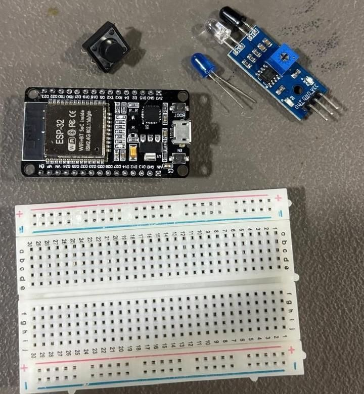
2.2 Wiring
Each part connects to its own GPIO pin, so the three tasks that use them never share a pin. The button is wired as active-low, so pressing it reads LOW.
| Part | ESP32 pin | Role |
|---|---|---|
| DHT11 sensor | GPIO 4 | Data line for temperature readings |
| LED | GPIO 2 | Alert indicator, driven HIGH for 100 ms |
| Push button (leg 1) | GPIO 15 | Acknowledge input, active-low with the internal pull-up (INPUT_PULLUP), so pressing reads LOW |
| Push button (leg 2) | GND | Diagonally opposite leg of the button, so pressing it connects GPIO 15 to GND |
| USB cable | Micro-USB port | Power and serial output (115200 baud) |
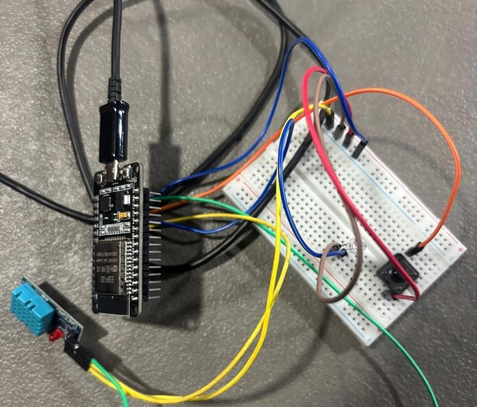
03Timing Parameters and Design Justification
The sensor is sampled once per second, which is the fastest the DHT11 allows, and the LED must turn on within 100 ms of the alert being detected. The values below are design targets chosen from the sensor limits and the RTOS behaviour.
| Parameter | Value | Why this value |
|---|---|---|
| Sensor sampling period | 1000 ms | The DHT11 needs about 1 s between reads, and room temperature changes slowly, so 200 ms would give repeated or failed reads. |
| Alert deadline | 100 ms | From the Temperature Task detecting the threshold to the LED turning ON. This is the response a person can notice as immediate. |
| Maximum alert latency | A task notification only marks the LED Task ready. The LED Task has higher priority than the Temperature Task, so it runs as soon as it is notified. | |
| Acceptable jitter | ±25 ms on sampling, ±5 ms on the 100 ms LED pulse | The DHT11 read blocks the Temperature Task for a few tens of milliseconds, and vTaskDelay adds that to the period. The LED pulse is a plain 100 ms delay on a 1 ms tick. |
| UART print period | 500 ms | Fast enough to watch changes live, slow enough not to flood the serial monitor. |
| Button debounce | 30 ms | Long enough to skip contact bounce, short enough to feel instant. |
In the serial logs the lines arrive about 460 to 530 ms apart against the 500 ms setting. The log timestamps are added by the PC, so they include USB serial delay on top of the board's own jitter.
Why these priorities suit the alert. The LED Task and Button Task are at priority 3 because their work is tiny and must happen immediately. The Temperature Task is at 2 because reading the DHT11 takes tens of milliseconds and must not delay a pending LED or button response. The UART Task is at 1 because printing is slow and not time-critical.
Why a task notification. It wakes one specific blocked task directly. It is faster and uses less RAM than a queue or semaphore, it needs no polling, and the LED Task stays blocked at no cost until there is something to do.
Why a shared variable is not required. A shared "alert" flag would need the LED Task to poll it and would need protection against races. With notifications, the event itself wakes the right task, and the alert state lives in one place, the Temperature Task.
04Task Architecture
Four tasks run under FreeRTOS, and each one blocks or sleeps whenever it has nothing to do. The LED and Button tasks sit at priority 3 so they respond at once. The Temperature Task sits at 2, and the slow, non-urgent UART printing sits at 1.
| Task | Priority | Normally | Wakes when | What it does |
|---|---|---|---|---|
| LED Task | 3 | Blocked on ulTaskNotifyTake | Temperature Task notifies it | LED ON for 100 ms, then OFF, then blocks again |
| Button Task | 3 | Blocked on ulTaskNotifyTake | The button ISR gives a notification on any pin change | Waits 30 ms (debounce), reads the pin, sends one acknowledgement per clean press |
| Temperature Task | 2 | Sleeping in vTaskDelay (1000 ms) | Its 1 s delay ends | Reads the DHT11, detects the rising edge across 29 °C, notifies the LED Task, checks for an acknowledgement, publishes a status snapshot |
| UART Task | 1 | Sleeping in vTaskDelay (500 ms) | Its 500 ms delay ends | Prints temperature, threshold and alert status |
How the tasks communicate
Temperature to LED: xTaskNotifyGive(ledTaskHandle). This is the alert signal.
Button ISR to Button Task: vTaskNotifyGiveFromISR. The ISR only wakes the task, and all logic stays in the task.
Button Task to Temperature Task: xTaskNotifyGive(tempTaskHandle). This is the acknowledgement.
Temperature to UART: a queue of length 1. xQueueOverwrite always stores the latest status, and xQueuePeek reads it without removing it. This only carries data for printing. It is not the alert signal, so the UART Task stays independent of the other three.
05Flowchart
The Temperature Task is the only task with branching logic, so it gets its own chart. It sends the LED notification only when the temperature newly reaches the threshold, not on every sample.
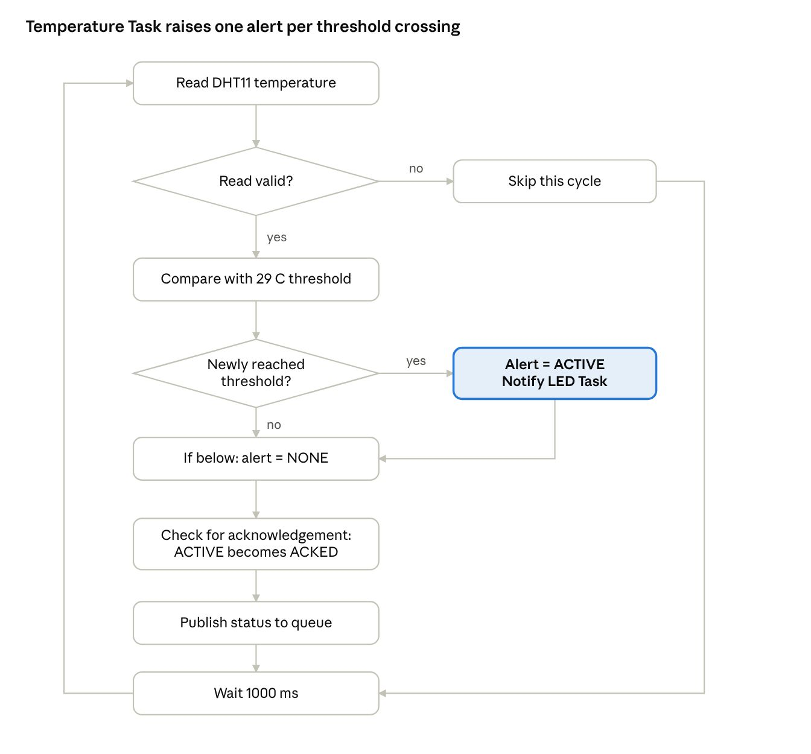
The other three tasks follow the same pattern: wait, act once, return to waiting. The Button Task's "not held" check is what stops a held button from producing repeated events.
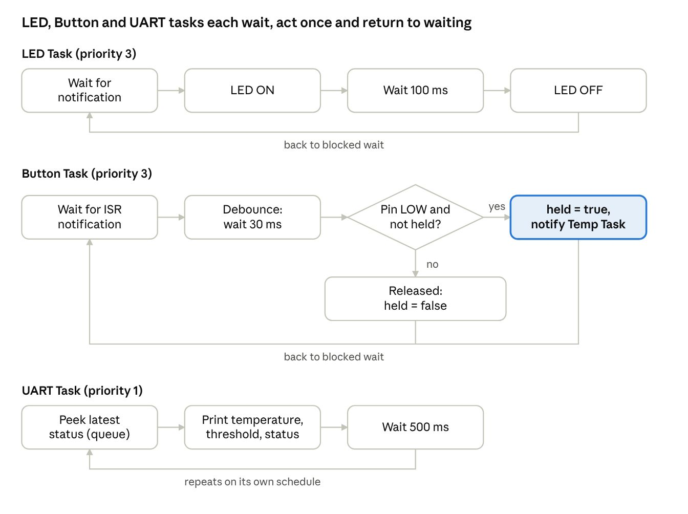
06Source Code and Explanation
The complete sketch is below, followed by what each part does and then a line-by-line walkthrough.
#include <Arduino.h>
#include <DHT.h>
#include "freertos/FreeRTOS.h"
#include "freertos/task.h"
#include "freertos/queue.h"
#define DHT_PIN 4
#define DHT_TYPE DHT11
#define LED_PIN 2
#define BUTTON_PIN 15
#define TEMP_THRESHOLD_C 29.0f
#define SENSOR_SAMPLE_PERIOD_MS 1000 // DHT11 hardware minimum ~1 s between reads
#define UART_PRINT_PERIOD_MS 500
#define LED_ON_TIME_MS 100
#define BUTTON_DEBOUNCE_MS 30
// Task priorities (higher number = higher priority)
#define PRIORITY_UART 1
#define PRIORITY_TEMP 2
#define PRIORITY_BUTTON 3
#define PRIORITY_LED 3
enum AlertState : uint8_t { ALERT_NONE = 0, ALERT_ACTIVE, ALERT_ACKED };
struct StatusMsg {
float temperature;
float threshold;
uint8_t alertState;
};
static TaskHandle_t ledTaskHandle = nullptr;
static TaskHandle_t tempTaskHandle = nullptr;
static TaskHandle_t buttonTaskHandle = nullptr;
static TaskHandle_t uartTaskHandle = nullptr;
static QueueHandle_t statusQueue; // length 1, holds latest StatusMsg
static DHT dht(DHT_PIN, DHT_TYPE);
void IRAM_ATTR buttonISR() {
BaseType_t xHigherPriorityTaskWoken = pdFALSE;
vTaskNotifyGiveFromISR(buttonTaskHandle, &xHigherPriorityTaskWoken);
portYIELD_FROM_ISR(xHigherPriorityTaskWoken);
}
void TemperatureTask(void *pvParameters) {
bool wasAboveThreshold = false;
uint8_t alertState = ALERT_NONE;
for (;;) {
float temperature = dht.readTemperature();
if (isnan(temperature)) {
vTaskDelay(pdMS_TO_TICKS(SENSOR_SAMPLE_PERIOD_MS));
continue;
}
bool isAboveThreshold = (temperature >= TEMP_THRESHOLD_C);
if (isAboveThreshold && !wasAboveThreshold) { // rising edge only
alertState = ALERT_ACTIVE;
xTaskNotifyGive(ledTaskHandle);
}
if (!isAboveThreshold) {
alertState = ALERT_NONE;
}
wasAboveThreshold = isAboveThreshold;
uint32_t notifyValue = 0;
if (xTaskNotifyWait(0, ULONG_MAX, ¬ifyValue, 0) == pdTRUE) {
if (alertState == ALERT_ACTIVE) {
alertState = ALERT_ACKED;
}
}
StatusMsg msg = { temperature, TEMP_THRESHOLD_C, alertState };
xQueueOverwrite(statusQueue, &msg);
vTaskDelay(pdMS_TO_TICKS(SENSOR_SAMPLE_PERIOD_MS));
}
}
void LedTask(void *pvParameters) {
pinMode(LED_PIN, OUTPUT);
digitalWrite(LED_PIN, LOW);
for (;;) {
ulTaskNotifyTake(pdTRUE, portMAX_DELAY); // blocked until notified
digitalWrite(LED_PIN, HIGH);
vTaskDelay(pdMS_TO_TICKS(LED_ON_TIME_MS));
digitalWrite(LED_PIN, LOW);
}
}
void ButtonTask(void *pvParameters) {
pinMode(BUTTON_PIN, INPUT_PULLUP);
bool buttonHeld = false;
for (;;) {
ulTaskNotifyTake(pdTRUE, portMAX_DELAY);
vTaskDelay(pdMS_TO_TICKS(BUTTON_DEBOUNCE_MS));
bool pressed = (digitalRead(BUTTON_PIN) == LOW);
if (pressed && !buttonHeld) {
buttonHeld = true;
xTaskNotifyGive(tempTaskHandle); // one acknowledgement per press
} else if (!pressed && buttonHeld) {
buttonHeld = false; // released: re-arm
}
}
}
void UartTask(void *pvParameters) {
StatusMsg msg = { 0, TEMP_THRESHOLD_C, ALERT_NONE };
for (;;) {
xQueuePeek(statusQueue, &msg, 0);
const char *stateStr =
(msg.alertState == ALERT_ACTIVE) ? "ALERT (unacknowledged)" :
(msg.alertState == ALERT_ACKED) ? "ALERT (acknowledged)" :
"OK";
Serial.print("Temp: ");
Serial.print(msg.temperature, 1);
Serial.print(" C | Threshold: ");
Serial.print(msg.threshold, 1);
Serial.print(" C | Status: ");
Serial.println(stateStr);
vTaskDelay(pdMS_TO_TICKS(UART_PRINT_PERIOD_MS));
}
}
void setup() {
Serial.begin(115200);
dht.begin();
statusQueue = xQueueCreate(1, sizeof(StatusMsg));
xTaskCreate(TemperatureTask, "TempTask", 4096, nullptr, PRIORITY_TEMP, &tempTaskHandle);
xTaskCreate(LedTask, "LedTask", 2048, nullptr, PRIORITY_LED, &ledTaskHandle);
xTaskCreate(ButtonTask, "BtnTask", 2048, nullptr, PRIORITY_BUTTON, &buttonTaskHandle);
xTaskCreate(UartTask, "UartTask", 2048, nullptr, PRIORITY_UART, &uartTaskHandle);
pinMode(BUTTON_PIN, INPUT_PULLUP);
attachInterrupt(digitalPinToInterrupt(BUTTON_PIN), buttonISR, CHANGE);
}
void loop() {
vTaskDelay(pdMS_TO_TICKS(1000)); // everything happens in the tasks
}Configuration and data. The #define block holds the pins, the 29 °C threshold and every timing value, so each one can be changed in one place. StatusMsg is a small struct (temperature, threshold, alert state) that the UART Task prints. AlertState has three values: none, active and acknowledged.
Button ISR. buttonISR runs on every pin change and does one thing: it gives a notification to the Button Task. All decisions stay in the task, because an interrupt handler must be short.
Temperature Task. Each second it reads the DHT11 and skips the cycle if the read fails (isnan). It compares the reading with the threshold and sends xTaskNotifyGive to the LED Task only on the rising edge, when the previous sample was below the threshold. Staying above the threshold sends nothing more, so the LED does not keep blinking. When the temperature drops below the threshold the alert state is cleared, so the next rise creates a new alert. It then checks for an acknowledgement with xTaskNotifyWait and a 0 timeout, which returns at once, and moves an active alert to acknowledged. Finally it writes the latest status to the queue and sleeps for 1000 ms.
LED Task. It sits in ulTaskNotifyTake(pdTRUE, portMAX_DELAY), which is the blocked state, and uses no CPU while waiting. On a notification it turns the LED ON, waits 100 ms with vTaskDelay, turns it OFF and goes back to waiting.
Button Task. The ISR wakes it, it waits 30 ms for the contact bounce to settle, then reads the pin (LOW means pressed, because of INPUT_PULLUP). A press is accepted only when the button was not already held, so one press sends exactly one acknowledgement. Holding the button sends nothing more until it is released and pressed again.
UART Task. It peeks at the status queue, which copies the latest status without removing it, and prints temperature, threshold and alert status every 500 ms. It never waits for the other tasks, so it keeps running on its own schedule.
setup() and loop(). setup starts the serial port and the sensor, creates the queue, creates the four tasks with their priorities and handles, and attaches the button interrupt on both edges. loop is empty apart from a long delay because all the work is in the tasks.
6.1 Line-by-line walkthrough
Part A: headers, pins and settings
#include <Arduino.h>
#include <DHT.h>
#include "freertos/FreeRTOS.h"
#include "freertos/task.h"
#include "freertos/queue.h"Arduino.h gives pinMode, digitalWrite, digitalRead and Serial.
DHT.h is the DHT sensor library. It provides the DHT class and readTemperature().
FreeRTOS.h is the FreeRTOS core. task.h gives tasks, delays and task notifications. queue.h gives queues. The ESP32 Arduino core already includes FreeRTOS, so nothing extra is installed.
#define DHT_PIN 4
#define DHT_TYPE DHT11
#define LED_PIN 2
#define BUTTON_PIN 15These four lines name the hardware: the DHT11 data pin is GPIO 4, the LED is on GPIO 2, and the button is on GPIO 15. Changing a pin later means editing only this block.
#define TEMP_THRESHOLD_C 29.0f
#define SENSOR_SAMPLE_PERIOD_MS 1000
#define UART_PRINT_PERIOD_MS 500
#define LED_ON_TIME_MS 100
#define BUTTON_DEBOUNCE_MS 30TEMP_THRESHOLD_C is the alert temperature. The f suffix makes it a float.
SENSOR_SAMPLE_PERIOD_MS is 1000 because the DHT11 cannot be read faster than about once a second.
UART_PRINT_PERIOD_MS is how often the status line is printed.
LED_ON_TIME_MS is the required 100 ms alert pulse.
BUTTON_DEBOUNCE_MS is how long the Button Task waits for contact bounce to settle.
#define PRIORITY_UART 1
#define PRIORITY_TEMP 2
#define PRIORITY_BUTTON 3
#define PRIORITY_LED 3A higher number means a higher priority in FreeRTOS. The scheduler always runs the highest-priority ready task. UART is lowest because printing is not urgent, and the LED and Button tasks are highest because they must react immediately.
enum AlertState : uint8_t { ALERT_NONE = 0, ALERT_ACTIVE, ALERT_ACKED };
struct StatusMsg {
float temperature;
float threshold;
uint8_t alertState;
};AlertState names the three states: no alert, alert raised and not yet acknowledged, alert acknowledged. Using names instead of 0, 1, 2 makes the code readable, and uint8_t keeps each value to one byte.
StatusMsg is the packet the Temperature Task hands to the UART Task: the latest temperature, the threshold and the alert state.
static TaskHandle_t ledTaskHandle = nullptr;
static TaskHandle_t tempTaskHandle = nullptr;
static TaskHandle_t buttonTaskHandle = nullptr;
static TaskHandle_t uartTaskHandle = nullptr;
static QueueHandle_t statusQueue;
static DHT dht(DHT_PIN, DHT_TYPE);A task handle is how one task refers to another. Notifications are sent to a handle, so the LED, Temperature and Button handles are needed. xTaskCreate fills each handle in setup().
statusQueue is the handle of the queue that carries StatusMsg.
dht is the sensor object, created with its pin and type.
Part B: the button interrupt
void IRAM_ATTR buttonISR() {
BaseType_t xHigherPriorityTaskWoken = pdFALSE;
vTaskNotifyGiveFromISR(buttonTaskHandle, &xHigherPriorityTaskWoken);
portYIELD_FROM_ISR(xHigherPriorityTaskWoken);
}IRAM_ATTR keeps this function in the ESP32's internal RAM so it can always run when the interrupt fires.
xHigherPriorityTaskWoken starts as pdFALSE. FreeRTOS sets it to pdTRUE if the notification woke a task with higher priority than the one that was interrupted.
vTaskNotifyGiveFromISR is the interrupt-safe way to send a notification. It wakes the blocked Button Task.
portYIELD_FROM_ISR switches to that task as soon as the ISR returns, instead of waiting for the next tick.
The ISR does no debouncing and reads no pin. An interrupt handler must stay very short, so all logic is left to the task.
Part C: Temperature Task
void TemperatureTask(void *pvParameters) {
bool wasAboveThreshold = false;
uint8_t alertState = ALERT_NONE;Every FreeRTOS task is a function that takes a void pointer parameter. This task does not use it.
wasAboveThreshold remembers the previous sample, which is how a rising edge is detected. alertState is the alert state, kept as a local variable inside the task, so nothing else can change it.
for (;;) {
float temperature = dht.readTemperature();
if (isnan(temperature)) {
vTaskDelay(pdMS_TO_TICKS(SENSOR_SAMPLE_PERIOD_MS));
continue;
}for (;;) is the endless loop every task needs, because a task must never return.
readTemperature() returns the temperature in °C, or NaN if the read failed. On a failed read the task sleeps for the normal period and tries again, so a bad reading never raises a false alert.
pdMS_TO_TICKS converts milliseconds into FreeRTOS ticks, so the delay is correct whatever the tick rate is.
bool isAboveThreshold = (temperature >= TEMP_THRESHOLD_C);
if (isAboveThreshold && !wasAboveThreshold) {
alertState = ALERT_ACTIVE;
xTaskNotifyGive(ledTaskHandle);
}The alert condition is "reaches or goes above" the threshold, so the test is >=.
The if fires only when the temperature is above the threshold now and was not above it last time. That is the rising edge, so one crossing gives exactly one notification.
xTaskNotifyGive(ledTaskHandle) is the alert signal. It wakes the blocked LED Task. The Temperature Task never touches the LED pin.
if (!isAboveThreshold) {
alertState = ALERT_NONE;
}
wasAboveThreshold = isAboveThreshold;When the temperature falls below the threshold the alert is cleared, so the next rise counts as a new alert.
The current result is saved for the next loop.
uint32_t notifyValue = 0;
if (xTaskNotifyWait(0, ULONG_MAX, ¬ifyValue, 0) == pdTRUE) {
if (alertState == ALERT_ACTIVE) {
alertState = ALERT_ACKED;
}
}xTaskNotifyWait checks whether the Button Task has sent an acknowledgement. Its four arguments are: bits to clear on entry (0), bits to clear on exit (ULONG_MAX clears all), where to store the value, and how long to wait.
The wait is 0, so it does not block. It returns pdTRUE at once if a notification was pending, otherwise pdFALSE, and the sampling loop carries on.
A button press only changes the state if an alert is active. It moves ACTIVE to ACKED. A press when there is no alert changes nothing.
StatusMsg msg = { temperature, TEMP_THRESHOLD_C, alertState };
xQueueOverwrite(statusQueue, &msg);
vTaskDelay(pdMS_TO_TICKS(SENSOR_SAMPLE_PERIOD_MS));
}
}The status packet is filled and written to the queue. xQueueOverwrite is made for a queue of length 1: it replaces the old item, so the queue always holds the newest status and this task never waits for the UART Task.
vTaskDelay puts the task to sleep for 1000 ms. While it sleeps it uses no CPU and the other tasks run.
Part D: LED Task
void LedTask(void *pvParameters) {
pinMode(LED_PIN, OUTPUT);
digitalWrite(LED_PIN, LOW);
for (;;) {
ulTaskNotifyTake(pdTRUE, portMAX_DELAY);
digitalWrite(LED_PIN, HIGH);
vTaskDelay(pdMS_TO_TICKS(LED_ON_TIME_MS));
digitalWrite(LED_PIN, LOW);
}
}The pin is set as an output and the LED starts OFF. Only this task ever touches the LED.
ulTaskNotifyTake(pdTRUE, portMAX_DELAY) is the blocked state. portMAX_DELAY means wait forever, so the task uses no CPU until the Temperature Task notifies it. pdTRUE resets the notification count to zero on exit, so one alert gives exactly one flash.
When woken, the LED goes HIGH for 100 ms and then LOW, and the loop returns to waiting. It flashes again only after a new notification.
Part E: Button Task
void ButtonTask(void *pvParameters) {
pinMode(BUTTON_PIN, INPUT_PULLUP);
bool buttonHeld = false;
for (;;) {
ulTaskNotifyTake(pdTRUE, portMAX_DELAY);
vTaskDelay(pdMS_TO_TICKS(BUTTON_DEBOUNCE_MS));
bool pressed = (digitalRead(BUTTON_PIN) == LOW);INPUT_PULLUP turns on the internal pull-up resistor, so the pin reads HIGH when the button is open and LOW when it is pressed (the button connects the pin to ground).
buttonHeld remembers whether the current press has already been reported.
The task blocks until the ISR notifies it. The interrupt fires on every change, so both a press and a release wake it.
It then waits 30 ms for the contact bounce to settle and reads the pin once. pressed is true when the pin is LOW.
if (pressed && !buttonHeld) {
buttonHeld = true;
xTaskNotifyGive(tempTaskHandle);
} else if (!pressed && buttonHeld) {
buttonHeld = false;
}
}
}A press that was not already reported sets buttonHeld and sends one acknowledgement to the Temperature Task.
A release clears buttonHeld, which re-arms the button, and sends nothing.
While the button stays held there are no pin changes, so no interrupts and no events. Pressing again sends a new event only after a release.
Part F: UART Task
void UartTask(void *pvParameters) {
StatusMsg msg = { 0, TEMP_THRESHOLD_C, ALERT_NONE };
for (;;) {
xQueuePeek(statusQueue, &msg, 0);
const char *stateStr =
(msg.alertState == ALERT_ACTIVE) ? "ALERT (unacknowledged)" :
(msg.alertState == ALERT_ACKED) ? "ALERT (acknowledged)" :
"OK";msg starts with safe default values, so the first print is valid even before the Temperature Task has produced a reading.
xQueuePeek copies the latest status without removing it, with a wait of 0. If the queue is empty the old values stay, so the UART Task never blocks.
The nested ?: turns the alert state into the text shown on the serial monitor.
Serial.print("Temp: ");
Serial.print(msg.temperature, 1);
Serial.print(" C | Threshold: ");
Serial.print(msg.threshold, 1);
Serial.print(" C | Status: ");
Serial.println(stateStr);
vTaskDelay(pdMS_TO_TICKS(UART_PRINT_PERIOD_MS));
}
}The line is printed in pieces, with temperature and threshold to one decimal place. This produces output such as: Temp: 24.1 C | Threshold: 29.0 C | Status: OK
The task then sleeps for 500 ms. It shares nothing but the queue with the other tasks, so it keeps printing on its own schedule.
Part G: setup() and loop()
void setup() {
Serial.begin(115200);
dht.begin();
statusQueue = xQueueCreate(1, sizeof(StatusMsg));Serial.begin(115200) opens the serial port at the speed set in the serial monitor. dht.begin() starts the sensor.
xQueueCreate(1, sizeof(StatusMsg)) makes a queue with one slot, big enough for one StatusMsg.
xTaskCreate(TemperatureTask, "TempTask", 4096, nullptr, PRIORITY_TEMP, &tempTaskHandle);
xTaskCreate(LedTask, "LedTask", 2048, nullptr, PRIORITY_LED, &ledTaskHandle);
xTaskCreate(ButtonTask, "BtnTask", 2048, nullptr, PRIORITY_BUTTON, &buttonTaskHandle);
xTaskCreate(UartTask, "UartTask", 2048, nullptr, PRIORITY_UART, &uartTaskHandle);The six arguments of xTaskCreate are: the task function, a name for debugging, the stack size (in bytes on the ESP32), a parameter (unused here), the priority, and a place to store the handle.
The Temperature Task gets the larger 4096-byte stack because it calls the sensor library. The others need less.
pinMode(BUTTON_PIN, INPUT_PULLUP);
attachInterrupt(digitalPinToInterrupt(BUTTON_PIN), buttonISR, CHANGE);
}
void loop() {
vTaskDelay(pdMS_TO_TICKS(1000));
}attachInterrupt with CHANGE calls buttonISR on both the falling and the rising edge. The tasks are created first so the ISR never runs before buttonTaskHandle is valid.
The Arduino loop() runs as its own low-priority task. It has nothing to do, so it just sleeps, and all real work happens in the four tasks.
6.2 FreeRTOS functions used
| Function | What it does in this project |
|---|---|
| xTaskCreate | Creates a task with its own stack and priority, and returns its handle |
| vTaskDelay | Puts the calling task to sleep for a number of ticks (the Blocked state) |
| pdMS_TO_TICKS | Converts milliseconds to ticks |
| xTaskNotifyGive | Sends a notification to a task, which wakes it if it is blocked waiting |
| ulTaskNotifyTake | Blocks until a notification arrives, then clears the count |
| xTaskNotifyWait | Checks for a notification, and with a timeout of 0 returns at once |
| vTaskNotifyGiveFromISR | Interrupt-safe version of xTaskNotifyGive |
| portYIELD_FROM_ISR | Switches straight to the woken task when the ISR ends |
| xQueueCreate | Creates the status queue |
| xQueueOverwrite | Writes the newest status, replacing the old one |
| xQueuePeek | Reads the status without removing it |
6.3 Behaviour notes
Task states: the LED and Button tasks are Blocked almost all the time, the Temperature and UART tasks are Blocked in vTaskDelay between runs, and a task is Running only for the short moment it has work to do.
Acknowledgement timing: the Temperature Task checks for the button notification once per cycle, so the status changes to acknowledged within about 1 second of the press.
First reading: if the very first valid reading is already at or above 29 °C, it counts as a rising edge and the LED flashes once.
07Demonstration and Output
The board reads 24.1 °C and reports OK, then reports an alert once the temperature reaches the 29 °C threshold, and the button changes the status to acknowledged.
Arduino IDE evidence
These screenshots are taken straight from Arduino IDE 2.3.10 with the ESP32 Dev Module selected on COM9. They show the sketch being built, uploaded to the board, and running with the serial monitor open at 115200 baud.
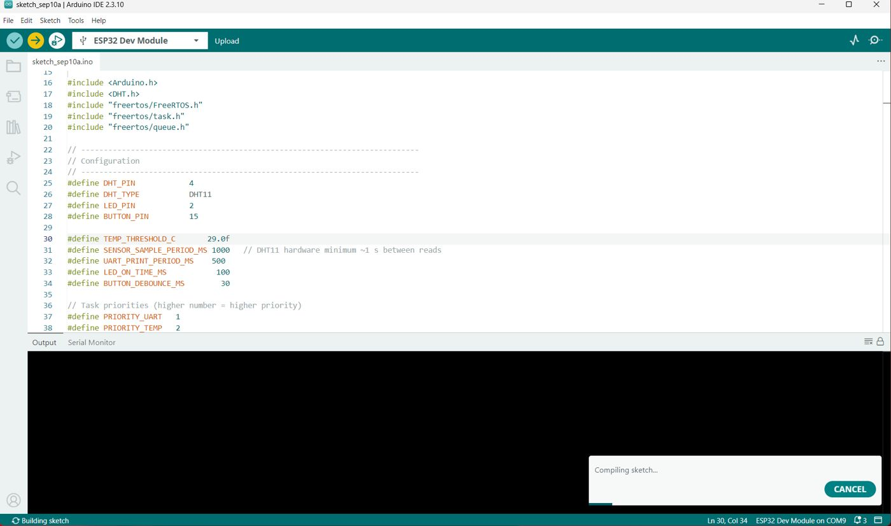
The upload log reports a program size of 277204 bytes (21% of program storage), global variables of 22636 bytes (6% of dynamic memory), esptool v5.3.1 connecting on COM9, and the chip as an ESP32-D0WD-V3 (revision v3.1) with Wi-Fi, Bluetooth and dual core at 240 MHz.
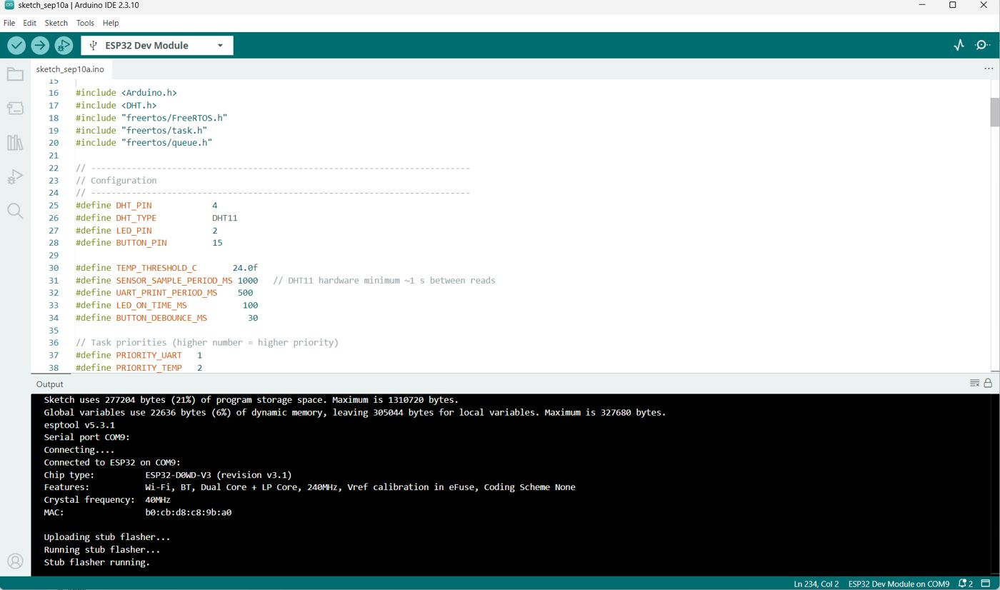
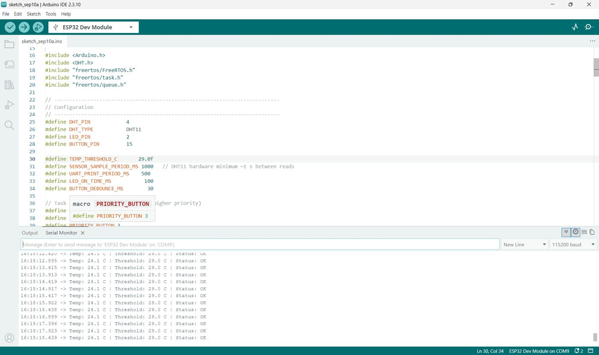
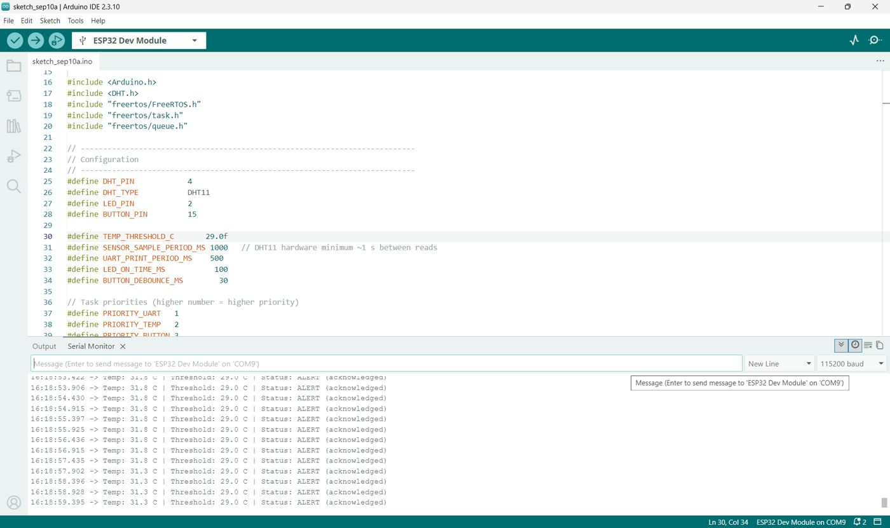
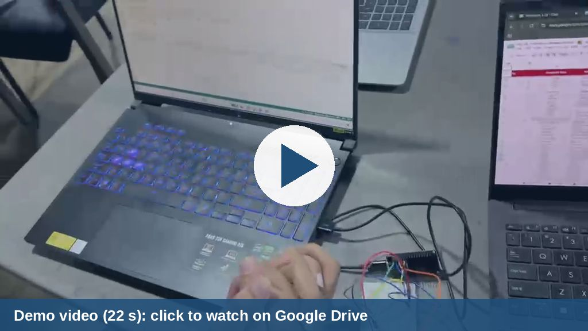
Click the preview to open the demo video on Google Drive.
Video Demonstration Link: CLICK HERE
Normal operation, temperature below the threshold
16:18:13.415 -> Temp: 24.1 C | Threshold: 29.0 C | Status: OK
16:18:13.913 -> Temp: 24.1 C | Threshold: 29.0 C | Status: OK
16:18:14.419 -> Temp: 24.1 C | Threshold: 29.0 C | Status: OK
16:18:14.917 -> Temp: 24.1 C | Threshold: 29.0 C | Status: OK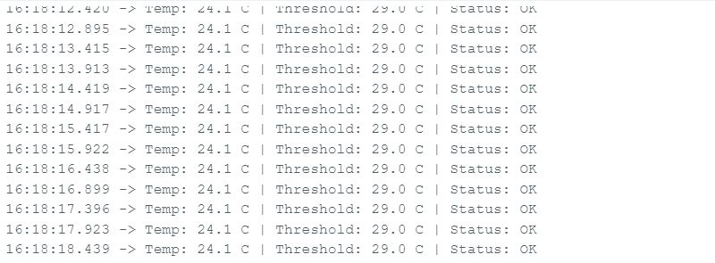
Alert raised and acknowledged
16:18:56.915 -> Temp: 31.8 C | Threshold: 29.0 C | Status: ALERT (acknowledged)
16:18:57.435 -> Temp: 31.8 C | Threshold: 29.0 C | Status: ALERT (acknowledged)
16:18:57.902 -> Temp: 31.3 C | Threshold: 29.0 C | Status: ALERT (acknowledged)
16:18:58.396 -> Temp: 31.3 C | Threshold: 29.0 C | Status: ALERT (acknowledged)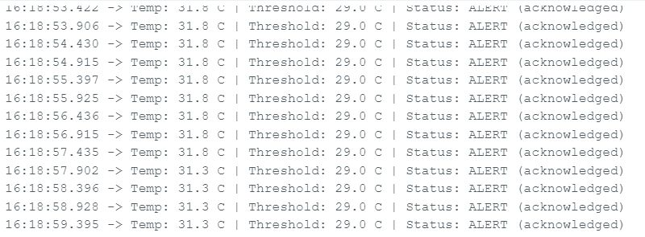
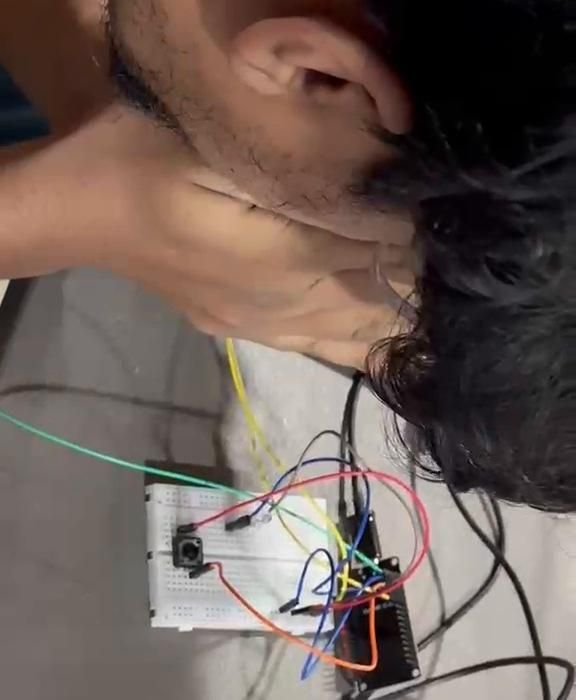
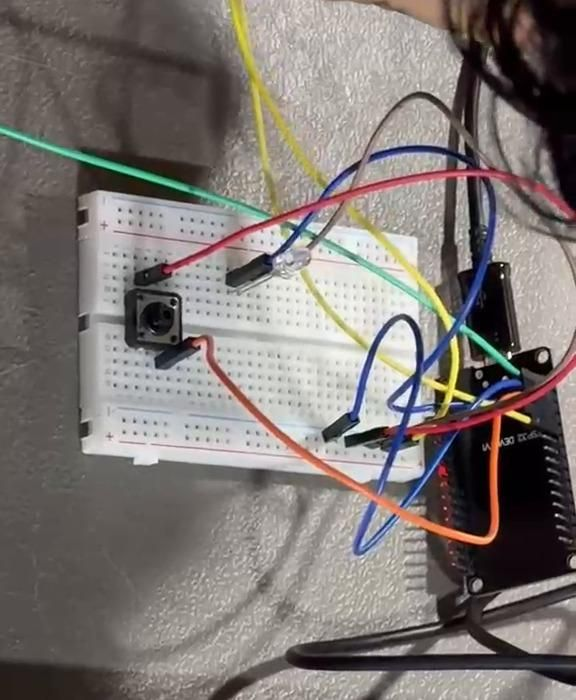
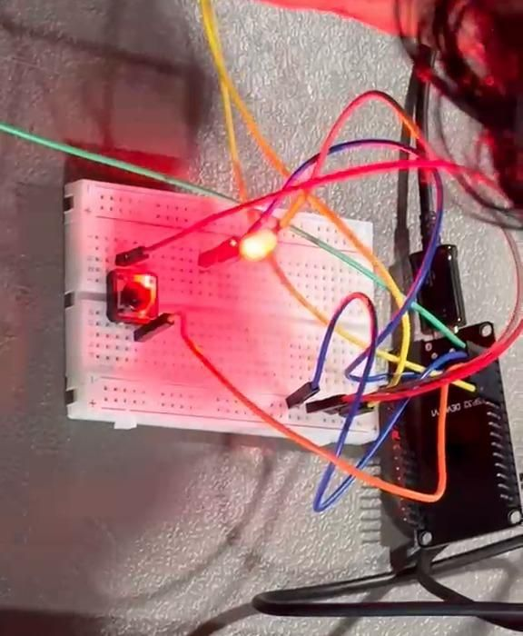
Figure 11. Frames from the demonstration video: I blow warm air on the DHT11, the temperature rises, and the LED flashes once when it crosses 29 °C.
Where each required behaviour is shown
| # | Behaviour | Where it is shown |
|---|---|---|
| 1 | Normal temperature monitoring | Figure 9: a reading every second, printed every 500 ms |
| 2 | Temperature below the threshold | Figure 9: 24.1 °C against 29.0 °C, status OK |
| 3 | Temperature reaching the threshold | Figure 10: 31.8 °C is above 29.0 °C, so the alert is active |
| 4 | Temperature Task sending the notification | Rising-edge check in TemperatureTask, then xTaskNotifyGive(ledTaskHandle) |
| 5 | LED Task waking from the blocked state | ulTaskNotifyTake returns when the notification arrives |
| 6 | LED turning ON for 100 ms | Figure 11 and the demo video: one short LED flash when the threshold is crossed |
| 7 | LED Task going back to the blocked state | Loop returns to ulTaskNotifyTake, so no second flash without a new rising edge |
| 8 | Button generating the acknowledgement | Figure 10: status changes to ALERT (acknowledged) |
| 9 | Button held without repeated events | buttonHeld flag: only one notification until release |
| 10 | UART status continuing independently | Figures 9 and 10: prints continue every 500 ms in both states |
08Conclusion
The system meets the assignment: the Temperature Task detects the threshold crossing and signals the LED Task with a task notification, the LED Task stays blocked until then, the Button Task turns each press into a single acknowledgement, and the UART Task reports status on its own schedule. Using notifications and a one-slot queue instead of a shared alert variable removed the need for polling and for protection against race conditions.
Two limits are worth stating. The 1 s sampling period is set by the DHT11, so the alert can lag the real temperature by up to a second. The latency and jitter figures are design targets, not measurements taken with a logic analyser.
09References and Acknowledgements
9.1 References
| Type | Reference | Used for |
|---|---|---|
| Library | DHT sensor library by Adafruit | Reading the DHT11 temperature (DHT.h, readTemperature()) |
| Board support | Arduino-ESP32 core by Espressif | ESP32 Dev Module support and the built-in FreeRTOS |
| Documentation | ESP-IDF FreeRTOS documentation | Task creation, task notifications and queue functions |
| Documentation | FreeRTOS website | FreeRTOS concepts such as priorities and blocking |
| Source code | introduction-to-rtos by Shawn Hymel (DigiKey) | ESP32 Arduino examples of creating FreeRTOS tasks and queues, referred to for the task structure |
| Source code | DHTtester example, Adafruit DHT library | Example of setting up the DHT11 and calling readTemperature() |
| Connections | ESP32 with DHT11/DHT22 (Random Nerd Tutorials) | DHT11 wiring with the data pin on GPIO 4 |
| Connections | ESP32 Button LED tutorial (ESP32IO) | Button with INPUT_PULLUP to GND and LED with a series resistor (the tutorial uses other GPIO pins) |
9.2 Acknowledgements
I would like to credit the authors of the DHT sensor library (Adafruit) and the Arduino-ESP32 core (Espressif Systems), which this program depends on, and the ESP-IDF FreeRTOS documentation that explains the task notification and queue functions.
The task structure follows the FreeRTOS examples in the introduction-to-rtos series by Shawn Hymel, and the wiring follows the Random Nerd Tutorials DHT11 guide and the ESP32IO button and LED tutorial. The circuit photograph and the serial monitor and Arduino IDE screenshots in this report are from my own setup.
Other tasks
LED Interfacing with Arduino UNO
Four LEDs on Arduino pins D8 to D11: first blinking together, then chasing one after another.
TASK 2Soldering a 555 Timer Two-LED Flasher
A 555 timer wired as an astable oscillator and soldered on a perfboard to flash two LEDs alternately.
TASK 3Sensor and Actuator Presentation
Closed-loop speed and position control of a PMDC motor using a rotary encoder.
TASK 4OLED-Based Game with Sensor Input
An Escape-the-Falling-Ball game on a 0.96-inch OLED, played with an analog joystick on an ESP32.